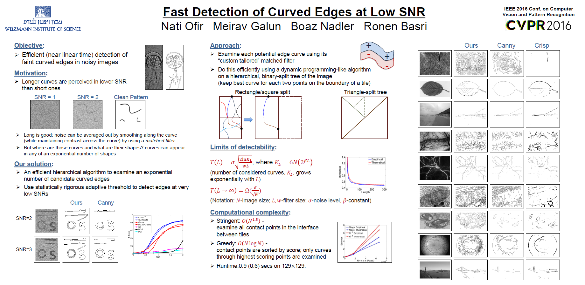
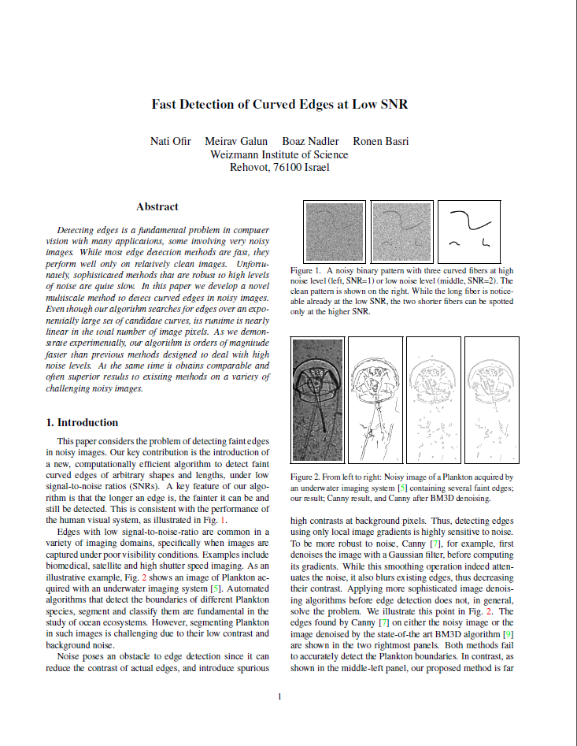

Summary
Objective:
Efficient (near linear time) detection of faint curved edges in noisy images
Our solution:
An efficient hierarchical algorithm to examine an exponential number of candidate curved edges
Use statistically rigorous adaptive threshold to detect edges at very low SNRs
See our poster for more details:

Download Poster
Code
Download C++ Code.
Usage:
Run demo.cpp to see our detection results on noisy and real images.
Requirements:
Visual Studio 2012
OpenCV 2.4.10
|
Paper

Download PDF
|
Abstract
Detecting edges is a fundamental problem in computer vision with many applications, some involving very noisy images. While most edge detection methods are fast, they perform well only on relatively clean images. Unfortunately, sophisticated methods that are robust to high levels of noise are quite slow. In this paper we develop a novel multiscale method to detect curved edges in noisy images. Even though our algorithm searches for edges over an exponentially large set of candidate curves, its runtime is nearly linear in the total number of image pixels.
As we demonstrate experimentally, our algorithm is orders of magnitude faster than previous methods designed to deal with high noise levels. At the same time it obtains comparable and often superior results to existing methods on a variety of challenging noisy images.